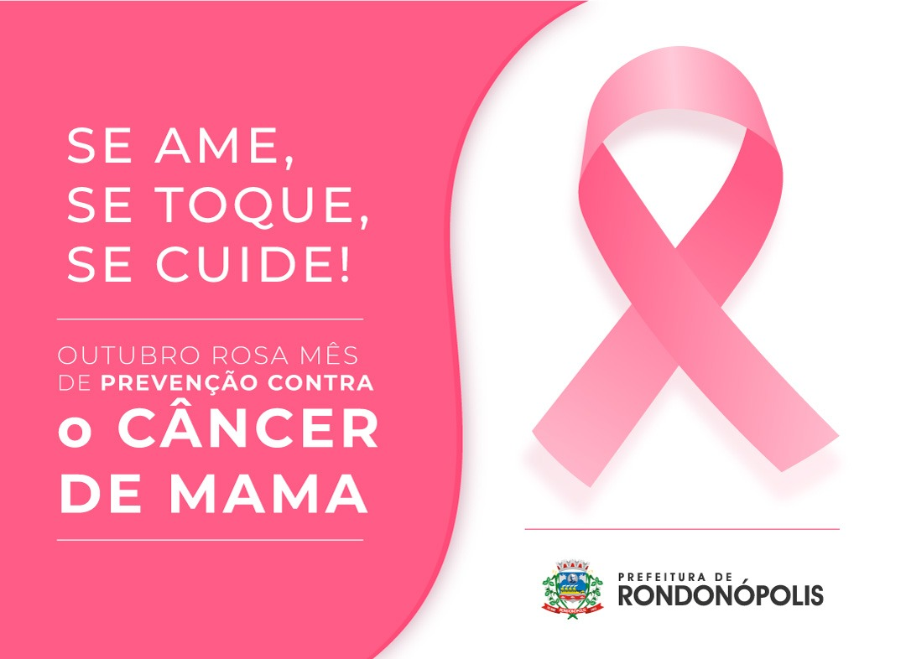

O objetivo da campanha é compartilhar informações sobre o câncer de mama e, mais recentemente, câncer do colo do útero, promovendo a conscientização sobre as doenças, proporcionando maior acesso aos serviços de diagnóstico e contribuindo para a redução da mortalidade. O nome da campanha remete à cor do laço que é um símbolo internacional usado por indivíduos, empresas e organizações na luta e prevenção do câncer de mama.
É por esse motivo que durante esse mês a cor rosa ilumina a fachada de diversas instituições públicas e privadas iluminam suas fachadas com objetivo promover indicar a adesão ao movimento. O diagnóstico precoce ainda é o maior aliado para o tratamento eficaz do câncer de mama. Quando identificado cedo pode ser tratado, impedindo que o tumor alcance outros órgãos. 